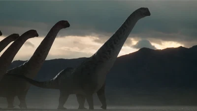
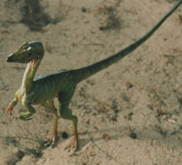

Images of the top 3 dinosaurs:

Return to home.
Gallimimus
This dinosaur and its relatives are sometimes called ostrich dinosaurs due to their appearance. Gallimimus was one of the biggest, growing to be twice as tall as an adult human!

Dreadnoughtus
Dreadnoughtus was so huge that it would have had to eat nearly constantly and spend as little energy as possible in order to survive.

Compsognathus
Compsognathus is a small dinasour, roughly the size of a chicken!

Thank you for visiting my DINOmite site!!